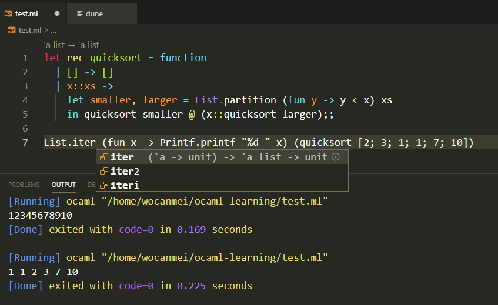

Windows用户Ocaml入坑指南
第一次听说Ocaml是看到Ocaml写的quicksort算法：
let rec quicksort = function
| [] -> []
| x::xs ->
let smaller, larger = List.partition (fun y -> y < x) xs
in quicksort smaller @ (x::quicksort larger);;
List.iter (fun x -> Printf.printf "%d " x) (quicksort [2; 3; 1; 1; 7; 10])
Java语言的实现相信大家都看过，这里我把Algorithms 4th中的源码贴一下：
public class Quick {
public static void sort(Comparable[] a) {
StdRandom.shuffle(a);
sort(a, 0, a.length - 1);
}
private static void sort(Comparable[] a, int lo, int hi) {
if (hi <= lo) return;
int j = partition(a, lo, hi);
sort(a, lo, j-1);
sort(a, j+1, hi);
}
private static int partition(Comparable[] a, int lo, int hi) {
int i = lo;
int j = hi + 1;
Comparable v = a[lo];
while (true) {
while (less(a[++i], v)) {
if (i == hi) break;
}
while (less(v, a[--j])) {
if (j == lo) break;
}
if (i >= j) break;
exch(a, i, j);
}
exch(a, lo, j);
return j;
}
private static boolean less(Comparable v, Comparable w) {
if (v == w) return false;
return v.compareTo(w) < 0;
}
private static void exch(Object[] a, int i, int j) {
Object swap = a[i];
a[i] = a[j];
a[j] = swap;
}
}
两下一对比，被震撼到了。这么说吧，看Ocaml写的快排算法很容易看到算法的本质，而Java的实现则是“一团糟”，算法的本质隐藏到琐碎的细节中了，通篇都是if分支和数组索引。Ocaml强大的模式匹配和immunable数据结构可以让你写出清晰简洁的代码。难能可贵的是，和曲高和寡的Lisp不同，Ocaml虽然崇尚函数式编程，但并不排斥命令式编程。另外，Ocaml是一门非常实用的语言，尤其适合编译方面的工作，所以如果你对DSL感兴趣，相信Ocaml会是你的菜，要知道大名鼎鼎的Rust语言在自举前编译器就是用Ocaml写的。
怀着激动的心情一通谷歌，发现只支持Linux和OSX，这就蛋疼了。尝试了官网安装说明中几种Windows安装方式，效果都不理想，顶多就一个黑框框，毕竟自己不是大神，还是需要代码提示和代码格式化这样的功能的，所以尝试了几次，只好忍痛割爱。一个偶然的机会，接触了Windows上的Wsl系统，感觉不错，又想起心心念念的Ocaml了，自然就想到了结合Wsl是否可以搭建一个理想的Ocaml环境？摸索了一段时间，终于找到一种比较理想的方法。
首先安装Wsl，在Windows开始中搜索：“程序与功能”，勾选“适用于Linux的Windows子系统”。下载Archlinux镜像，解压到文件夹，打开Arch.exe，等待安装完成。
Archlinux刚开始只有一个root，我习惯先新建一个用户，你也可以直接使用root。新建用户命令如下：
useradd -m -G wheel -s /bin/bash [用户名]
passwd [用户名]
visudo
找到这么一行#%wheel ALL=(ALL) ALL，将全面的#去掉，用户就创建好了，然后使用下面的命令切换到此用户的主目录：
su [用户名]
cd ~
下面配置pacman，
sudo pacman-key --init
sudo pacman-key --populate
sudo vim /etc/pacman.d/mirrorlist
找到mirrorlist里China那一组，找几个离你比较近的源，把前面的#去掉，然后用下面的命令更新软件包缓存：
sudo pacman -Syy
下面安装Ocaml必须的软件，
sudo pacman -S ocaml
# opam是ocaml的包管理工具，类似python的pip，java的maven
sudo pacman -S opam
sudo pacman -S patch
sudo pacman -S m4
sudo pacman -S make
sudo pacman -S gcc
接着，初始化opam，
# wsl系统需要加上--disable-sandboxing选项
opam init --disable-sandboxing
# 可以将下面的命令加到.bashrc文件中，不用每次手动执行了
eval $(opam env)
# 下面是ocaml格式化和代码提示所需的工具
opam install merlin
opam user-setup install
opam install ocp-indent
opam user-setup install
opam install utop
这些都成功后下载vscode，在Windows上安装，完成后回到Linux执行下面的命令：
code .
下面推荐一下几个插件：
- OCaml and Reason IDE，注意还有一个插件叫OCaml and Reason IDE For Wsl，选那个不带For Wsl
- Code Runner插件可以方便的运行单文件程序，推荐大家装一下。
- ocaml-reason-format，用来格式化代码，OCaml and Reason IDE本身的格式化不太好。
最终的settings.json如下：
"editor.fontSize": 18,
"reason.path.ocamlmerlin": "/home/user/.opam/default/bin/ocamlmerlin",
"reason.path.ocpindent": "/home/user/.opam/default/bin/ocp-indent",
"editor.formatOnType": true,
"reason.codelens.enabled": false, // 不显示类型提示
"ocaml-reason-format.ocamlformat": "/home/user/.opam/default/bin/ocamlformat",
"[ocaml]": {
"editor.defaultFormatter": "rustykey.vscode-ocaml-reason-format"
},

最后一步了，大家加油！新建一个文件test.ml，将开头的那段Ocaml代码拷进去，新建另一个文件dune，输入下面的内容：
(executables
(names test))
在vscode的terminal中执行dune exec ./test.bc，如果看到1 1 2 3 7 10，就说明配置成功了，接下来尽情享受Ocaml带给你不一样的感觉吧！